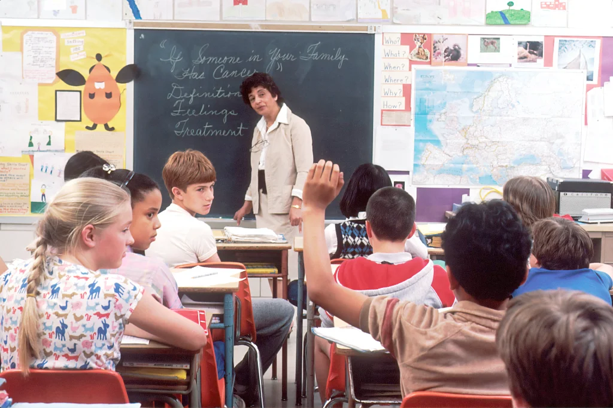

St. Francis Day and Boarding Primary School – Ntinda is proud to announce another year of exceptional performance in the Uganda National Examinations Board (UNEB) Primary Leaving Examinations (PLE), reaffirming our 36-year legacy of academic excellence.
Through the combined dedication of our teaching faculty, supportive parents, and disciplined candidates, 100% of our Primary Seven candidates passed with flying colours, with the vast majority earning First Grade (Division One) aggregates and securing places in Uganda's top traditional secondary schools.
True education builds both the mind and the character. When we nurture discipline, curiosity, and confidence in young learners, excellence follows naturally.
Mr. Francis Mukasa, Headteacher
UNEB PLE Performance Highlights

All four examinable subjects—Mathematics, English Language, Integrated Science, and Social Studies & Religious Education—recorded strong distinction rates. Special commendation goes to our Mathematics and English departments for achieving over 85% Distinction 1 and Distinction 2 grades across the candidate stream.
100% Pass Rate
Every registered P.7 candidate qualified for secondary school placement
First-Choice Secondary Admissions
Graduates admitted to King's College Budo, Gayaza High School, St. Mary's College Kisubi, Nabisunsa, and Mt. St. Mary's Namagunga
What Drives Our Classroom Success
Rather than relying on last-minute cramming in Primary Seven, our academic model builds strong foundations from Nursery and Lower Primary. Small class sizes allow teachers to track each pupil's mastery of literacy and numeracy concepts week by week.
Academic Pillars
- Continuous fortnightly diagnostic assessments
- Practical science & mathematical problem solving
- Daily library reading and debate practice
Holistic Support
- Individualized remedial coaching clinics
- Supervised boarding evening prep
- Close termly parent-teacher consultations
New Term Innovations: STEM & Digital Literacy
This academic year, we have expanded our computer laboratory with 25 new workstations and interactive projectors. Pupils from Primary One to Primary Seven now attend weekly practical ICT classes covering typing, digital research, and introductory Scratch programming.
Hands-On Science
Weekly practical experiments in our Junior Science Discovery Lab
Coding & ICT
Digital literacy integrated across Lower and Upper Primary
Public Speaking
Compulsory debate, spelling bee, and writers club participation
Upgraded Boarding & Dining Facilities
During the holiday break, our boys' and girls' boarding dormitories underwent refurbishment with fresh paint, upgraded solar lighting backup, and expanded study spaces. Our kitchen and dining team also introduced an enhanced termly menu featuring daily fresh fruit and balanced proteins.
Admissions & Campus Visits Open
Parents seeking day or boarding admission for Nursery and Primary One to Primary Six are welcome to visit our campus along Kiwatule Road, Ntinda from Monday to Saturday.
Looking Ahead to Upcoming Term Events
We invite all parents, guardians, and Old Students to participate actively in our upcoming school calendar events:
Annual Science & Innovation Fair (June 15)
Pupil-built science models and environmental innovations in the Main Hall
Parents Visitation & Academic Day (June 22)
One-on-one academic progress reviews with class and subject teachers
Inter-House Athletics & Sports Gala (June 30)
Track and field finals between St. Francis, St. Clare, St. Anthony, and St. Theresa Houses